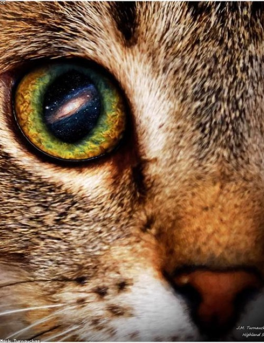
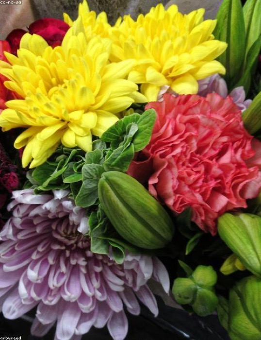
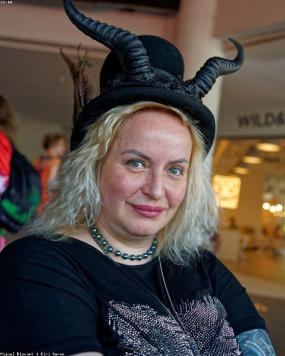
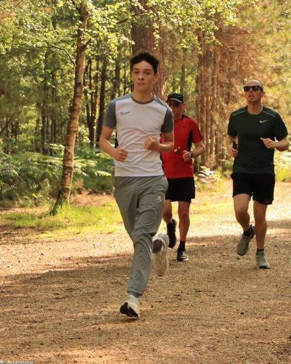
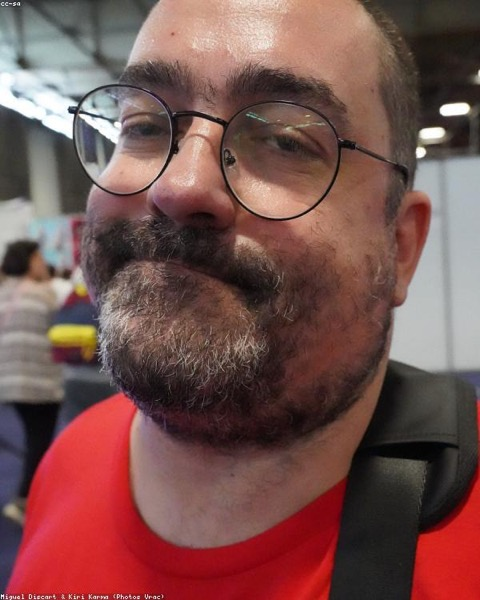
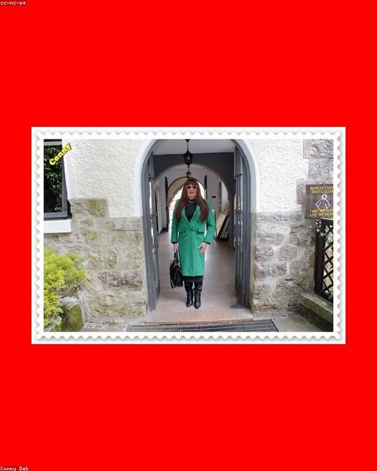

La photographie autrementSublime
Des instants intemporels saisis dans une toute nouvelle dimension.
Réserver une séanceLa photographie est l’art, la pratique et l’application de la création d’images durables.
L’International Center of Photography de New York est le plus grand au monde.
LIRE LA SUITE


« Potozon a transporté notre séance dans une toute nouvelle dimension. Chaque image est éclatante, vivante et incomparablement nôtre. »
Mara K.
Directrice artistique


Nous sommes Potozon — un studio qui traite la photographie comme une nouvelle dimension. Couleur, mouvement et cadrage audacieux, capturés avec éclat et sans limite de temps.
Du portrait aux univers de marque, chaque prestation est shootée à la manière Potozon — audacieuse, colorée, vivante.
Séances portrait
Des portraits intemporels qui révèlent la personnalité, l’humeur et l’histoire silencieuse de chaque visage — sublimés par une couleur intense.

Événements & extérieur
Une couverture sincère et pleine d’énergie de vos mariages, lancements et instants en plein air, saisis tels qu’ils se vivent.

Univers famille
Des moments de famille chaleureux et joueurs, capturés dans une lumière douce, intime et honnête.
Retouche & étalonnage
Une post-production raffinée et un étalonnage couleur signature qui subliment chaque image tout en la gardant authentique.

Marque & commercial
Donnez vie à vos produits et à votre histoire de marque grâce à des visuels percutants qui arrêtent le défilement.

Ils nous ont fait confiance
Nos dernières réalisations
Une sélection de projets récents qui illustrent notre approche : audacieuse, colorée et profondément humaine.
Janvier 2026
Éditorial mode
Le denim réinventé
Un éditorial mode qui explore le denim au-delà de sa forme traditionnelle — texture, couleur et polyvalence.
Décembre 2025
Univers famille
Les premiers jours de Zoé
Les tout premiers instants d’une vie capturés dans un cadre calme et cocooning, baigné de lumière naturelle.
Novembre 2025
Lifestyle extérieur
Le matin en mouvement
Une séance lifestyle au lever du soleil qui met en valeur la lumière naturelle et les expressions spontanées.
Octobre 2025
Marque & commercial
Essence Gaïa
Un éditorial de marque inspiré par la nature, la chaleur et la beauté organique.
Capturer au-delà du cadre
La photographie, pour nous, est plus qu’une image — c’est une émotion préservée. Nous cherchons la lumière, la couleur et ces instants suspendus, uniques, qui font qu’une histoire mérite d’être racontée.
Lancer un projet0+
Années derrière l’objectif
0
Projets livrés
0
Prix & publications
Ce qu'ils en disent
Des mots qui nous touchent et nous motivent à continuer de créer avec passion.
« Potozon a photographié notre mariage avec un art fou. Chaque image est vivante et sincère. »
Amara Okafor
Mariée
« La séance la plus naturelle que j’aie jamais vécue. Le résultat parle plus fort que tous les mots. »

Lukas Meyer
Directeur artistique
« Sincère, patient et terriblement talentueux. Notre séance famille avait des airs de jeu. »

Sofia Bianchi
Séance famille
Questions fréquentes
Des réponses claires pour vous aider à avancer sereinement dans votre projet.
Écrivez-nous par email, partagez votre vision et vos dates — nous vous envoyons une proposition sur mesure sous 48 heures.
La préparation en amont, la séance elle-même, l’étalonnage couleur signature et une galerie privée en ligne avec téléchargements haute définition.
Les galeries retouchées sont livrées sous 7 à 14 jours selon l’ampleur du projet.
Absolument — nous travaillons partout et sommes disponibles dans le monde entier pour les beaux projets.
Oui, tirages fine-art et albums sont disponibles en option, en qualité premium, vérifiés à la main avant expédition.
Prêt à capturer votre histoire ?
Écrivez-nous, partagez votre vision et commençons à créer ensemble.
Nous écrire